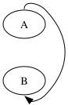
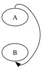

FIXED 2026-06-15 (per-rank MINW bound, commit f5711d3). Side mask on BOTH ends (tail :n exits the top away from the head; head :s enters the bottom away from the tail) — a double loop. The mid-corridor now matches dot; pinned in steering-port-regression.test.ts.
The drawings below are the actual rendered SVGs — the visual match is the test. Backgrounds are a checker pattern so white fills show.


First edge path control points (SVG frame).
| pt | dot 15.0.0 | graphviz-ts | Δ |
|---|---|---|---|
| 0 (tail :n) | 27.00,-118.01 | 27.00,-117.36 | 0.65 |
| 1 | 27.00,-130.01 | 27.00,-129.37 | 0.64 |
| 2 | 45.67,-125.65 | 45.67,-125.01 | 0.64 |
| 3 | 54.00,-117.01 | 54.00,-116.36 | 0.65 |
| 4 | 87.50,-82.24 | 87.31,-81.80 | 0.47 |
| 5 | 87.50,-43.13 | 87.31,-42.93 | 0.28 |
| 6 | 54.00,-8.36 | 54.00,-8.36 | 0.00 |
| 9 (→ B) | 35.80,0.00 | 35.80,0.00 | 0.00 |
| arrow tip | 28.16,-6.39 | 28.16,-6.39 | 0.00 |
Endpoints and both loop entries/exits match (≤0.65pt; arrowhead exact). The route is the correct shape — up over A, around the right, down under B.
The mid-corridor lateral excursion joining the two loops now matches dot: ts holds x=87.31 vs dot x=87.5 (Δ≤0.47pt, was 24pt). Root cause was the corridor bound: computeLeftBound/computeRightBound added MINW once total, but C (dotsplines.c:278) adds it once PER RANK — so a 2-rank edge’s corridor was ~16pt too narrow. Fixed by accumulating MINW per rank; the residual ≤0.65pt is start-clip renormalization. Not a Proutespline/Pshortestpath divergence.
The fix is in edge-route-rank.ts (per-rank MINW). It also resolved A:e->B:e and the adjacent flat-adj arc — all three were the same both-ends-side-port corridor bug. All 115 goldens stayed byte-identical (their splines never reach the bound). Pinned by steering-port-regression.test.ts.